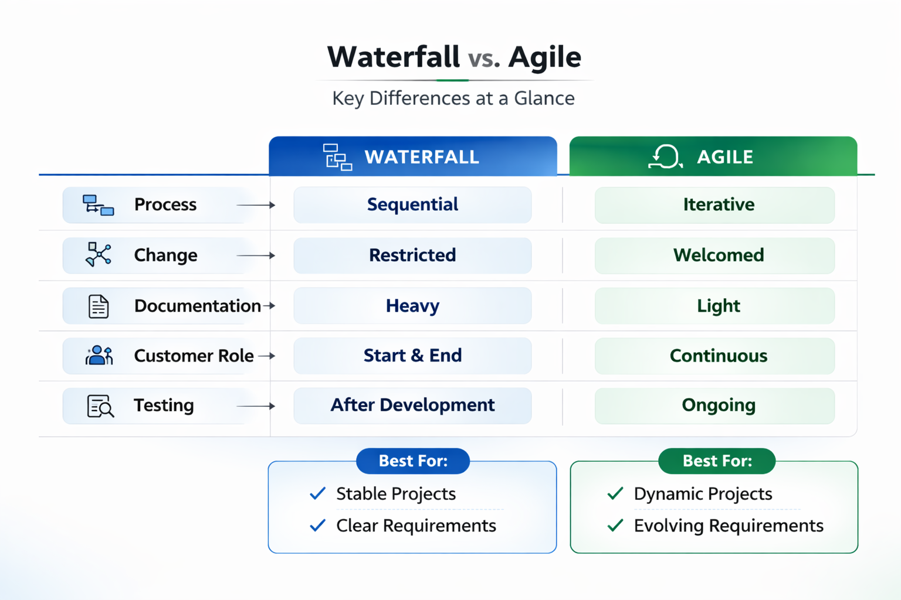
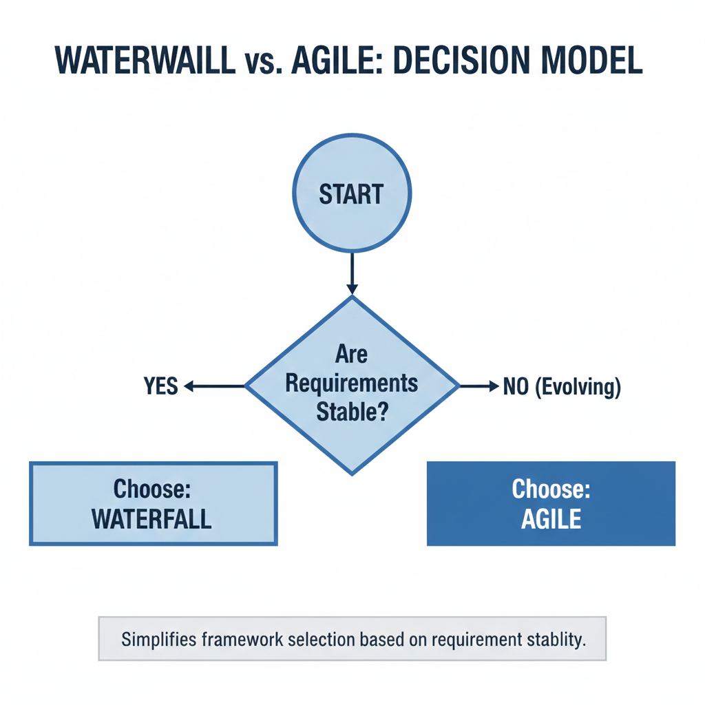

Selecting the right framework is a strategic decision. The choice depends on project characteristics, stakeholder expectations, and environmental factors.
Understanding when to recommend Agile vs. Waterfall helps you guide stakeholders, set realistic expectations, and choose the right approach for each project context — avoiding framework mismatches that lead to failure.

| Process | → Sequential |
| Change | → Restricted |
| Documentation | → Heavy |
| Customer Role | → Start & End |
| Testing | → After Development |
| Process | → Iterative |
| Change | → Welcomed |
| Documentation | → Light |
| Customer Role | → Continuous |
| Testing | → Ongoing |

This decision tree shows that requirement stability is a key factor in selecting a framework. Stable requirements favor Waterfall, while evolving requirements favor Agile.
Agile Manifesto. (n.d.). Values and principles. Retrieved from https://agilemanifesto.org/
Atlassian. (n.d.). Waterfall vs Agile: How to choose the right method. Retrieved from https://www.atlassian.com/agile/waterfall-vs-agile
Project Management Institute. (2013). A guide to the project management body of knowledge (PMBOK® guide) (5th ed.). Author.